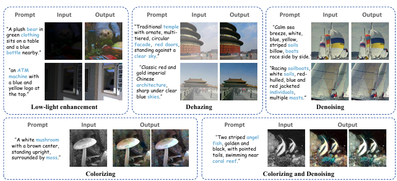

ICCV 2025
LD-RPS: Zero-Shot Unified Image Restoration via Latent Diffusion Recurrent Posterior Sampling

Abstract
LD-RPS is a dataset-free unified image restoration method based on recurrent posterior sampling with a pretrained latent diffusion model. A multimodal understanding model supplies semantic priors under task-blind conditions, a lightweight module aligns degraded inputs with the diffusion model’s generative preference, and recurrent refinement performs posterior sampling.
At a glance
One zero-shot framework handles multiple image degradations without task-specific paired training data. The released code includes pipelines for low-light enhancement, dehazing, and denoising; see the paper for all evaluated tasks, metrics, and ablations.
Citation
@inproceedings{Li_2025_ICCV,
author={Li, Huaqiu and Wang, Yong and Huang, Tongwen and Huang, Hailang and Wang, Haoqian and Chu, Xiangxiang},
title={LD-RPS: Zero-Shot Unified Image Restoration via Latent Diffusion Recurrent Posterior Sampling},
booktitle={Proceedings of the IEEE/CVF International Conference on Computer Vision},
pages={13684--13694}, year={2025}
}